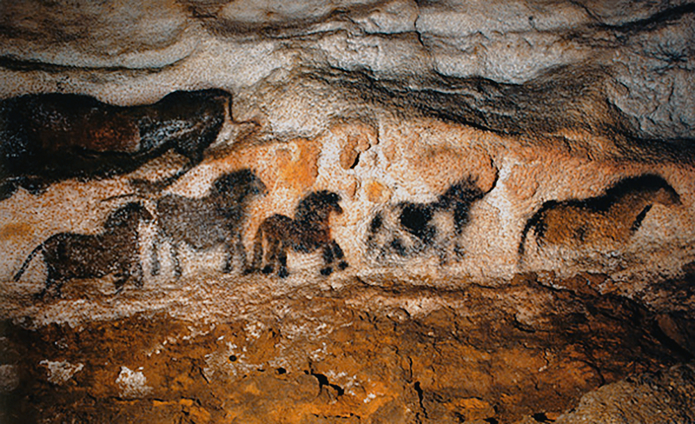
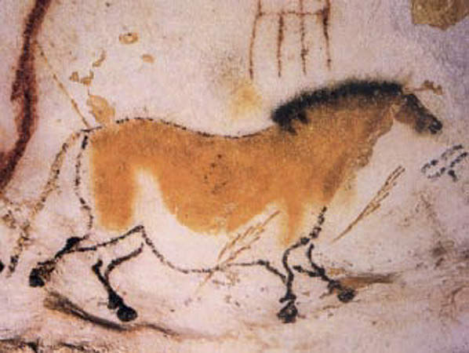

Sites of Southern France
~36,000-29,000 years~ ago
Above: Rock of Solutre, Copyright © 2025 - Department of Saône-et-Loire - Grand Site de France Solutré Pouilly Vergisson
The journey begins at the rock of Solutre located in southern France. This rock was believed
to be a slaughtering site. Initially,
it was speculated that humans used the ledge of the cliff to send horses over the edge and to their deaths.
Later evidence contradicts this view and suggests horse hunts were not likely to have been conducted
in such a way but did still occur at the site (American Museum of Natural History, n.d.).
Moving to a neighboring site, the Chauvet
and Lascaux caves, we see the first artistic depictions of horses
and many other animals, immortalized on the cave walls. These early depictions show humans' interest in the horses
whether for sustenance, or another, greater purpose.


Millennia later, around 5,500 years ago, the domestication of horses
by the Botai culture in northern Kazakhstan,
marked a pivotal transformation. Archaeological evidence from
Botai settlements indicates that horses were not only hunted but also herded and probably
ridden, as suggested by wear patterns on horse teeth consistent with bit use. This development
transformed the horse from a source of meat into a revolutionary means of transportation,
effectively becoming a form of "travel technology" that enhanced mobility, trade, and communication,
thereby significantly advancing human civilization (Levine, 1999).
Pictured above: Comparison of the Botai “bit wear” specimen (center) with a similar tooth from a Pleistocene wild horse from North America (specimen no MgVo-1: K8-1-2; Canadian Museum of History).